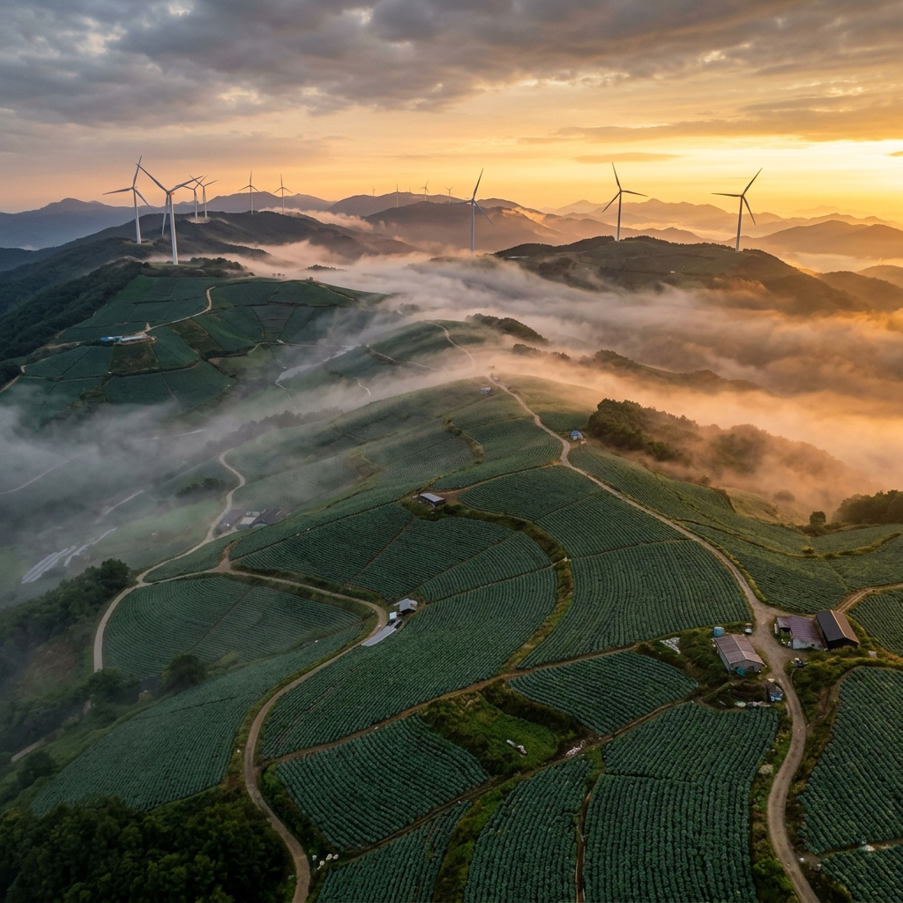
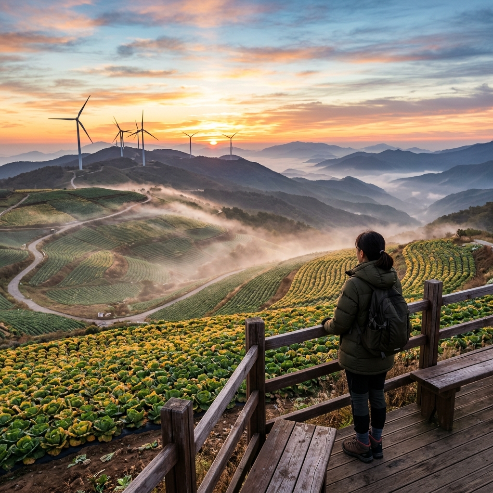
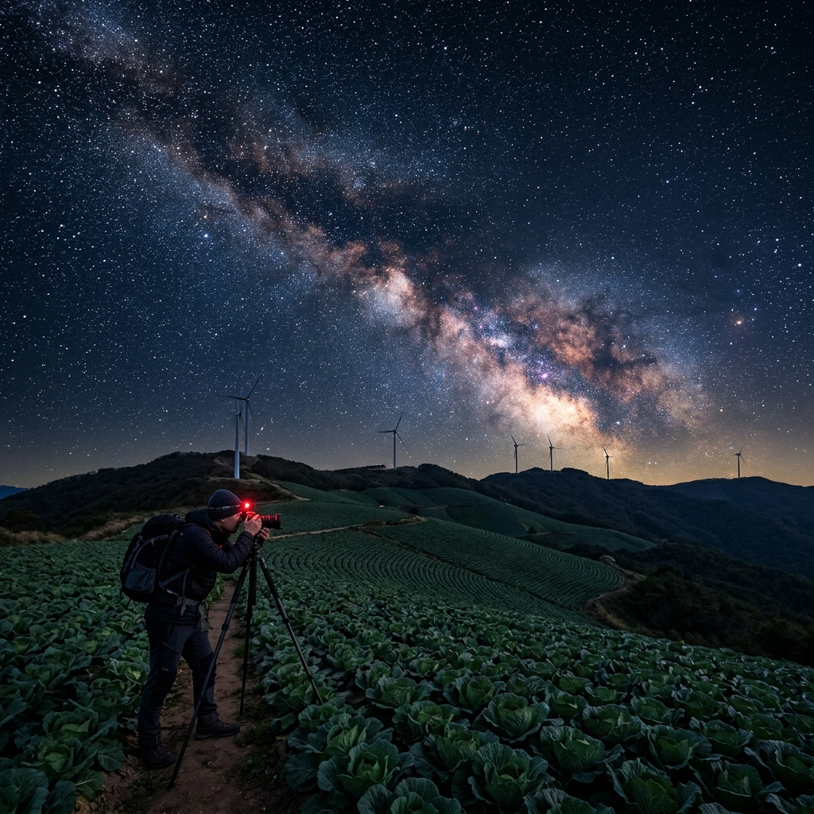

안반데기 은하수 명소 직접 올라가 봤습니다, 운유길 트레킹과 배추밭 일출 포인트
✍️ 직접 가보니
지난 7월 초에 안반데기 강릉 쪽 길로 새벽 3시에 올라갔습니다. 해발 1,100m 고개를 차로 오르다가 창문을 내렸는데 서늘한 바람이 확 들어왔고, 정상부 주차장에 서자마자 머리 위로 은하수가 펼쳐졌습니다. 서울에서 두 시간 반을 달려온 보람이 한 번에 느껴지는 순간이었습니다. 다만 고원이라 예상보다 바람이 강했고, 여름인데도 얇은 재킷이 꼭 필요했습니다.
01 안반데기가 은하수 명소가 된 이유
안반데기는 강릉시 왕산면에 위치한 해발 약 1,100m 고원 농업지입니다. 인근 강릉·평창·정선 중 가장 광활한 배추밭이 펼쳐지는 이곳이 은하수 명소로 입소문 난 것은 무엇 때문일까요.
핵심은 두 가지입니다. 첫째로
주변 30km 이내에 대도시가 없어 광공해가 극히 낮습니다. 강릉 시내에서 차로 50분가량 산 속으로 들어오기 때문에 인공 불빛이 거의 차단됩니다. 둘째로
고원이라 수평선이 낮게 열립니다. 산 중턱 숲 속에서는 나무에 가려 은하수가 잘 보이지 않는데, 안반데기는 배추밭이 360도 탁 트여 있어 하늘 전체를 감상할 수 있습니다.
7월은 은하수 은하면(은하수 핵심부)이 남동쪽 하늘 높이 떠오르는 시기라, 연중 가장 화려한 은하수를 볼 수 있는 달입니다.

안반데기 고원에서 바라본 은하수 (이미지 제작 예정)
02 오르는 길 두 가지 — 강릉 vs 평창
안반데기에 오르는 길은 강릉 왕산 방면과 평창 방면 두 갈래가 있습니다. 대부분의 여행자는 강릉 방향 도로(왕산면 대기리 방면)를 이용합니다.
강릉 방향은 왕산면 중심부에서 약 15분 오르면 도착하고, 도로 상태가 비교적 양호합니다. 다만 일부 구간은 폭이 좁아 승합차나 RV 차량은 이전 차량과 교행 시 조심해야 합니다.
평창 방면은 진입로가 더 험하고 경사도 가파르지만, 밤에 오를 경우 강릉 방향보다 교행 차량이 적어 수월하다는 후기도 있습니다.
네비게이션 검색 시 "안반데기" 또는 "강릉 안반데기 주차장"을 입력하면 강릉 방향으로 안내받을 수 있습니다.
03 은하수 관측 최적 타이밍과 월별 방향
은하수는
신월(음력 초하루) 전후 3일이 달빛이 없어 가장 잘 보입니다. 보름달 전후에는 달빛에 가려 잘 보이지 않습니다.
7~8월의 경우, 저녁 9시 이후 동쪽에서 올라오기 시작해 자정 무렵 남쪽 하늘 중천에 걸립니다. 촬영 대상으로 삼는다면 자정 전후 1~2시간이 황금 시간대입니다.
구름이 없는 맑은 날을 잡는 것이 무엇보다 중요합니다. 강릉 고원 지역은 7월 장마 후반기에 잠시 청명해지는 날이 있으므로, 기상청 천기예보와 stellarium 앱을 미리 확인하고 출발하세요.

안반데기 운유길 트레킹 구간 (이미지 제작 예정)
04 운유길 트레킹 — 배추밭 사이 구름길 걷기
은하수 관측 후 새벽에 해가 떠오르기 시작하면 운유길 트레킹을 시작할 수 있습니다. 운유길은 총 약 8km 코스로, 배추밭 두렁과 고원 능선을 따라 걷습니다.
코스 중간에 이정표와 데크 전망대가 몇 군데 설치되어 있습니다. 새벽 5~6시에 걸으면 안개가 배추밭을 가득 채우는 장면을 볼 수 있는데, 이 장면이 "구름 위를 걷는다"는 표현이 나온 이유입니다.
일출은 동쪽 능선 방향에서 솟아오릅니다. 주차장 위 전망대에서 보면 배추밭과 일출이 동시에 프레임에 들어오는 포인트를 잡을 수 있습니다.
걷는 시간은 전 코스 완주 기준 약 2~3시간이며, 일부 구간만 걸을 경우 30분~1시간으로도 주요 포인트를 볼 수 있습니다.
05 솔직한 장단점 — 직접 느낀 점
[좋았던 점]
- 하늘이 정말 넓다: 사방이 트인 고원이라 별이 지평선까지 꽉 찬 느낌
- 배추밭 일출이 예상보다 훨씬 인상적: 사진으로 보던 것보다 실제가 훨씬 좋다
- 여름이지만 서늘해 쾌적: 도심보다 8~10도 낮아 여름 피서지로도 제격
[아쉬웠던 점]
- 새벽에 화장실 찾기 어려움: 주차장 근처 화장실이 한 곳뿐, 오래 머물 경우 미리 확인 필요
- 풍경 사진 촬영 경쟁 치열: 일출 포인트에 삼각대를 일찍 잡지 않으면 자리 경쟁이 심함
- 산길 운전 긴장도 높음: 야간 운전 시 커브 구간에서 전조등 켜고 천천히 올라야 함

안반데기 배추밭 일출 전망 포인트 (이미지 제작 예정)
06 주차와 시설 안내
안반데기 주차장은 무료이며 약 30~50대 주차 가능합니다. 성수기 주말에는 새벽 2~3시에도 이미 차가 가득 찰 수 있으므로 여유 있게 출발하세요.
주차장 근처에 간이 매점이 있어 컵라면·음료 등을 판매합니다(운영 시간 변동 가능, 현장 확인). 7월 성수기 주말에는 새벽에도 영업하는 경우가 많습니다.
화장실은 주차장 옆에 1곳이 있습니다. 물은 미리 충분히 챙겨 가세요.
07 주변 연계 여행지 추천
안반데기 새벽 별 + 일출을 즐긴 뒤 아침 일찍 강릉 시내로 내려와 오전 카페 거리를 방문하거나, 정선 방향으로 넘어가 정선 5일장이나 아라리 뮤지엄을 들를 수 있습니다.
영양 반딧불이 공원(영양천문과학관)은 별 관측 명소로 안반데기와 같은 분야의 여행지이므로, 강원·경북 루트를 짠다면 함께 묶을 수 있습니다.
동강 래프팅으로 유명한 영월·정선을 다음 날 코스로 잡으면 1박 2일 강원도 북부 루트가 완성됩니다.
08 별 사진 촬영 기초 세팅
DSLR·미러리스가 없어도 최신 스마트폰의 야간 촬영 모드로도 은하수를 찍을 수 있습니다.
스마트폰 촬영 팁: 야간/천체 모드 선택 후 삼각대 거치. 셔터 속도 10~25초, ISO 1600~3200 범위에서 밝기를 조절합니다. 셀프 타이머 2~3초 설정으로 흔들림을 최소화하세요.
카메라 촬영: f/2.8 이하 광각 렌즈, 셔터 15~25초, ISO 3200~6400. 초점은 무한대(∞) 또는 라이브뷰에서 밝은 별에 맞추세요.
촬영 후 라이트룸·스냅시드로 노이즈 감소·화이트밸런스를 조정하면 훨씬 선명한 사진을 얻을 수 있습니다.
09 방문 전 체크리스트
□ 날씨·달 위상 확인 (앱: 맑은하늘·Stellarium)
□ 얇은 재킷·긴 바지 준비 (야간 고원 기온 15~20도)
□ 삼각대 또는 셀카봉
□ 손전등·헤드랜턴 (주차장~전망대 야간 이동)
□ 보조배터리 (촬영 중 배터리 소모 큼)
□ 물·간식 (매점 새벽 영업 불확실)
□ 여유 시간 확보 (왕복 운전 + 트레킹 = 총 8~10시간 예상)
📝 작성자 메모
안반데기를 처음 갔을 때 아무 정보 없이 올라갔다가 주차 자리를 못 잡아 1시간 기다린 적이 있습니다. 주말 성수기에는 정말 자정 전에 미리 올라가서 자리 잡는 게 핵심입니다. 트레킹 신발 없이 샌들로 올라갔다가 이슬 맞아 발이 젖었던 기억도 나네요. 방문하실 분은 꼭 운동화나 등산화 착용하시길 권합니다.
#안반데기
#안반데기은하수
#강릉별보기
#운유길
#배추밭일출
#강원도여행
#여름여행
#별여행
#국내여행
#고원트레킹